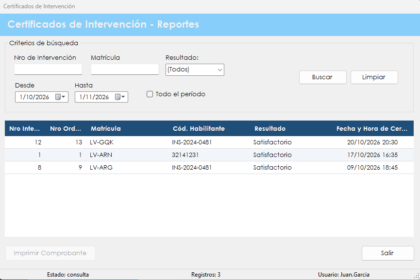

Permite buscar los certificados ya emitidos y volver a imprimirlos.
El certificado es el respaldo de que una intervención fue inspeccionada, y puede hacer falta consultarlo mucho después de emitido. Este reporte reúne las certificaciones registradas y permite encontrarlas por número de intervención, matrícula, resultado o fecha.
Es una consulta: no certifica nada ni modifica datos. Las certificaciones nuevas se registran en Certificar intervención.
Desde el menú principal, en Reportes › Certificados de Intervención. La opción aparece si el rol del usuario incluye la patente correspondiente.

| Control | Para qué se usa |
|---|---|
| Nro de Intervención | Filtra por el número escrito, aunque sea solo una parte. |
| Matrícula | Filtra por la matrícula escrita, aunque sea solo una parte. |
| Resultado | (Todos), Satisfactorio o No Satisfactorio. |
| Desde y Hasta | Definen el período de certificación. No pueden superar el día de hoy. |
| Todo el período | Tildada, ignora las fechas y busca en todas las certificaciones. |
| Buscar | Muestra las certificaciones que cumplen los criterios. |
| Limpiar | Borra los criterios y vuelve a la consulta del último mes. |
| Grilla de certificaciones | Muestra Nro Intervención, Nro Orden, Matrícula, Cód. Habilitante, Resultado y Fecha y Hora de Certificación. |
| Imprimir Comprobante | Se habilita al elegir una certificación. Genera el certificado en PDF y lo abre. |
| Salir | Cierra la pantalla. |
| Barra de estado | Muestra el estado de la consulta, la cantidad de registros y el usuario. |
| Situación | Qué significa y qué hacer |
|---|---|
| La grilla muestra "No hay datos para mostrar." | Ninguna certificación cumple los criterios, y la barra de estado indica "sin resultados". Conviene ampliar el período o tildar Todo el período. |
| "Error al recuperar las certificaciones:" seguido del motivo | No se pudo cargar la grilla. Después de los dos puntos se indica la causa técnica. |
| "Debe seleccionar un certificado de la grilla." | Hay que hacer clic en una fila antes de imprimir. |
| "No se pudo recuperar la intervención del certificado." | No se encontró la intervención asociada y el documento no se generó. Conviene avisarle al administrador. |
| "Error al generar el certificado:" seguido del motivo | El PDF no se pudo crear. Después de los dos puntos se indica la causa técnica. |